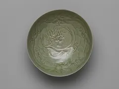
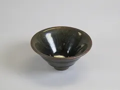
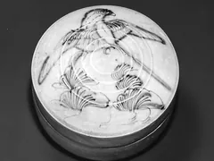
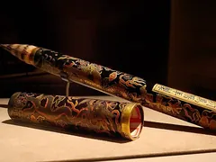
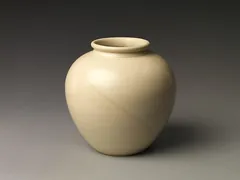
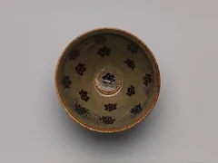
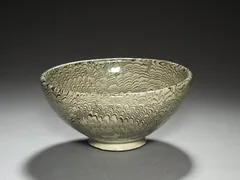

非遗图鉴 / 天工造物
08
非遗图鉴 · 传统技艺
天工造物
传统技艺 · 287 项、629 子项 · 第 4 / 5 页（Ⅷ-181 至 Ⅷ-240）
每一条只列名录上的事实：编号、名称、申报地区或单位、公布年份和批次。详情看中国非物质文化遗产网的官方页。在名录检索里查这一门类 →
- Ⅷ-181
- Ⅷ-182
黎族船型屋营造技艺
- 海南省东方市2008 第二批 · 新增项目官方页 →
- Ⅷ-183
哈萨克族毡房营造技艺
- 新疆维吾尔自治区塔城地区2008 第二批 · 新增项目官方页 →
- Ⅷ-184
俄罗斯族民居营造技艺
- 新疆维吾尔自治区塔城地区2008 第二批 · 新增项目官方页 →
- Ⅷ-185
撒拉族篱笆楼营造技艺
- 青海省循化撒拉族自治县2008 第二批 · 新增项目官方页 →
- Ⅷ-186
- Ⅷ-187

北宋越窑青瓷碗，大都会艺术博物馆藏图：大都会艺术博物馆（The Metropolitan Museum of Art） / Public Domain (Open Access, CC0) / 大都会艺术博物馆。本站已缩放裁切。 - Ⅷ-188
建窑建盏烧制技艺
- 福建省南平市2011 第三批 · 新增项目官方页 →

宋建窑黑釉茶盏，大都会艺术博物馆藏图：大都会艺术博物馆（The Metropolitan Museum of Art） / Public Domain (Open Access, CC0) / 大都会艺术博物馆。本站已缩放裁切。 - Ⅷ-189

北宋汝窑青瓷笔洗，克利夫兰艺术博物馆藏图：克利夫兰艺术博物馆（The Cleveland Museum of Art） / CC0 1.0 / 克利夫兰艺术博物馆。本站已缩放裁切。 - Ⅷ-190
淄博陶瓷烧制技艺
- 山东省淄博市2011 第三批 · 新增项目官方页 →
- Ⅷ-191
长沙窑铜官陶瓷烧制技艺
- 湖南省长沙市望城区2011 第三批 · 新增项目官方页 →

唐长沙窑盒，大都会艺术博物馆藏图：大都会艺术博物馆（The Metropolitan Museum of Art） / Public Domain (Open Access, CC0) / 大都会艺术博物馆。本站已缩放裁切。 - Ⅷ-192
蓝夹缬技艺
- 浙江省温州市2011 第三批 · 新增项目官方页 →
- Ⅷ-193
中式服装制作技艺
- 中式服装制作技艺（龙凤旗袍手工制作技艺）上海市静安区2011 第三批 · 新增项目官方页 →
- 中式服装制作技艺（亨生奉帮裁缝技艺）上海市静安区2011 第三批 · 新增项目官方页 →
- 中式服装制作技艺（培罗蒙奉帮裁缝技艺）上海市黄浦区2011 第三批 · 新增项目官方页 →
- 中式服装制作技艺（振兴祥中式服装制作技艺）浙江省杭州市2011 第三批 · 新增项目官方页 →
- 中式服装制作技艺（满族旗袍制作技艺）吉林省吉林市2021 第五批 · 扩展项目官方页 →
- 中式服装制作技艺（红帮裁缝技艺）浙江省宁波市奉化区2021 第五批 · 扩展项目官方页 →
- 中式服装制作技艺（香港中式长衫制作技艺）香港特别行政区2021 第五批 · 扩展项目官方页 →
- Ⅷ-194
铅锡刻镂技艺
- 湖北省荆州市2011 第三批 · 新增项目官方页 →
- Ⅷ-195
乌铜走银制作技艺
- 云南省石屏县2011 第三批 · 新增项目官方页 →
- Ⅷ-196
- Ⅷ-197
- Ⅷ-198
国画颜料制作技艺
- 国画颜料制作技艺（姜思序堂国画颜料制作技艺）江苏省苏州市2011 第三批 · 新增项目官方页 →
- Ⅷ-199
藏族矿植物颜料制作技艺
- 西藏自治区拉萨市2011 第三批 · 新增项目官方页 →
- Ⅷ-200
毛笔制作技艺

Calligraphy brush with golden dragon design. Ming Dynasty, Wanli Period (A.D. 1573 - 162…图：Editor at Large / CC BY-SA 2.5 / 维基共享资源。本站已缩放裁切，按 CC BY-SA 2.5 同样许可共享。 - Ⅷ-201
衡水法帖雕版拓印技艺
- 河北省衡水市桃城区2011 第三批 · 新增项目官方页 →
- Ⅷ-202
古书画临摹复制技艺
- 故宫博物院2011 第三批 · 新增项目官方页 →
- Ⅷ-203
白茶制作技艺
- 白茶制作技艺（福鼎白茶制作技艺）福建省福鼎市2011 第三批 · 新增项目官方页 →
- Ⅷ-204
仿膳（清廷御膳）制作技艺
- 北京市西城区2011 第三批 · 新增项目官方页 →
- Ⅷ-205
直隶官府菜烹饪技艺
- 河北省保定市2011 第三批 · 新增项目官方页 →
- Ⅷ-206
孔府菜烹饪技艺
- 山东省曲阜市2011 第三批 · 新增项目官方页 →
- Ⅷ-207
五芳斋粽子制作技艺
- 浙江省嘉兴市2011 第三批 · 新增项目官方页 →
- Ⅷ-208
北京四合院传统营造技艺
- 中国艺术研究院2011 第三批 · 新增项目官方页 →
- Ⅷ-209
雁门民居营造技艺
- 山西省忻州市2011 第三批 · 新增项目官方页 →
- Ⅷ-210
石库门里弄建筑营造技艺
- 上海市黄浦区2011 第三批 · 新增项目官方页 →
- Ⅷ-211
- Ⅷ-212
维吾尔族民居建筑技艺
- 维吾尔族民居建筑技艺（阿依旺赛来民居营造技艺）新疆维吾尔自治区和田地区2011 第三批 · 新增项目官方页 →
- Ⅷ-213
邢窑陶瓷烧制技艺
- 河北省邢台市2014 第四批 · 新增项目官方页 →

唐邢窑白瓷罐，大都会艺术博物馆藏图：大都会艺术博物馆（The Metropolitan Museum of Art） / Public Domain (Open Access, CC0) / 大都会艺术博物馆。本站已缩放裁切。 - Ⅷ-214
- Ⅷ-215
吉州窑陶瓷烧制技艺
- 江西省吉安市2014 第四批 · 新增项目官方页 →

南宋吉州窑碗，大都会艺术博物馆藏图：大都会艺术博物馆（The Metropolitan Museum of Art） / Public Domain (Open Access, CC0) / 大都会艺术博物馆。本站已缩放裁切。 - Ⅷ-216
登封窑陶瓷烧制技艺
- 河南省登封市2014 第四批 · 新增项目官方页 →
- Ⅷ-217
当阳峪绞胎瓷烧制技艺
- 河南省焦作市2014 第四批 · 新增项目官方页 →

北宋当阳峪窑绞胎碗，克利夫兰艺术博物馆藏图：克利夫兰艺术博物馆（The Cleveland Museum of Art） / CC0 1.0 / 克利夫兰艺术博物馆。本站已缩放裁切。 - Ⅷ-218
潮州彩瓷烧制技艺
- 广东省潮州市2014 第四批 · 新增项目官方页 →
- Ⅷ-219
陶瓷微书
- 广东省汕头市2014 第四批 · 新增项目官方页 →
- Ⅷ-220
- Ⅷ-221
藏族鎏钴技艺
- 青海省2014 第四批 · 新增项目官方页 →
- Ⅷ-222
- Ⅷ-223
古代钟表修复技艺
- 故宫博物院2014 第四批 · 新增项目官方页 →
- Ⅷ-224
- Ⅷ-225
一得阁墨汁制作技艺
- 北京市西城区2014 第四批 · 新增项目官方页 →
- Ⅷ-226
奶制品制作技艺
- 奶制品制作技艺（察干伊德）内蒙古自治区正蓝旗2014 第四批 · 新增项目官方页 →
- Ⅷ-227
辽菜传统烹饪技艺
- 辽宁省沈阳市2014 第四批 · 新增项目官方页 →
- Ⅷ-228
泡菜制作技艺
- 泡菜制作技艺（朝鲜族泡菜制作技艺）吉林省延吉市2014 第四批 · 新增项目官方页 →
- Ⅷ-229
老汤精配制
- 黑龙江省哈尔滨市阿城区2014 第四批 · 新增项目官方页 →
- Ⅷ-230
上海本帮菜肴传统烹饪技艺
- 上海市黄浦区2014 第四批 · 新增项目官方页 →
- Ⅷ-231
传统制糖技艺
- 传统制糖技艺（义乌红糖制作技艺）浙江省义乌市2014 第四批 · 新增项目官方页 →
- Ⅷ-232
- Ⅷ-233
德州扒鸡制作技艺
- 山东省德州市2014 第四批 · 新增项目官方页 →

Bought freshly in TX... well, Dezhou, and eaten in Shangqiu.图：N509FZ / CC BY-SA 4.0 / 维基共享资源。本站已缩放裁切，按 CC BY-SA 4.0 同样许可共享。 - Ⅷ-234
龙口粉丝传统制作技艺
- 山东省招远市2014 第四批 · 新增项目官方页 →
- Ⅷ-235
蒙自过桥米线制作技艺
- 云南省蒙自市2014 第四批 · 新增项目官方页 →
- Ⅷ-236
坎儿井开凿技艺
- 新疆维吾尔自治区吐鲁番市2014 第四批 · 新增项目官方页 →
- Ⅷ-237
古建筑模型制作技艺
- 山西省太原市2014 第四批 · 新增项目官方页 →
- Ⅷ-238
传统造园技艺
- 传统造园技艺（扬州园林营造技艺）江苏省扬州市2014 第四批 · 新增项目官方页 →
- Ⅷ-239
古戏台营造技艺
- 江西省乐平市2014 第四批 · 新增项目官方页 →
- Ⅷ-240
庐陵传统民居营造技艺
- 江西省泰和县2014 第四批 · 新增项目官方页 →